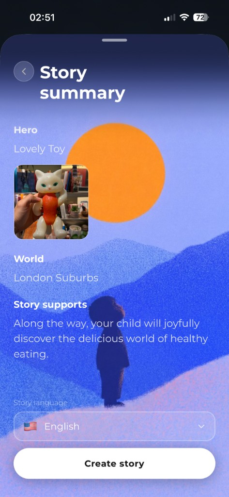
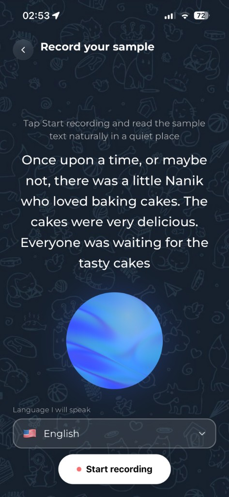
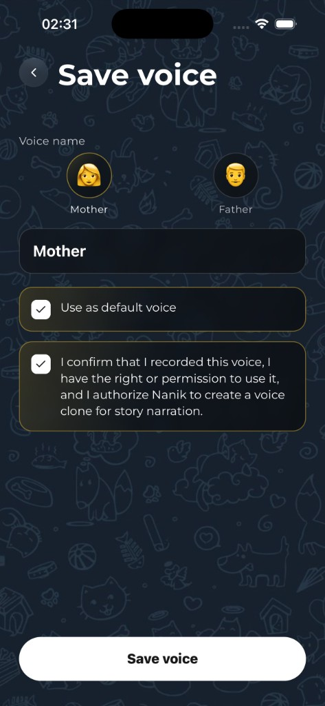
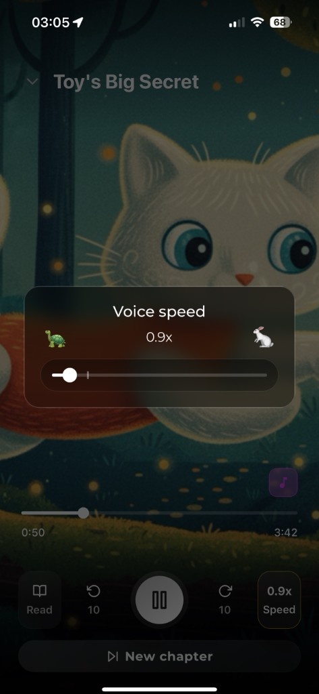
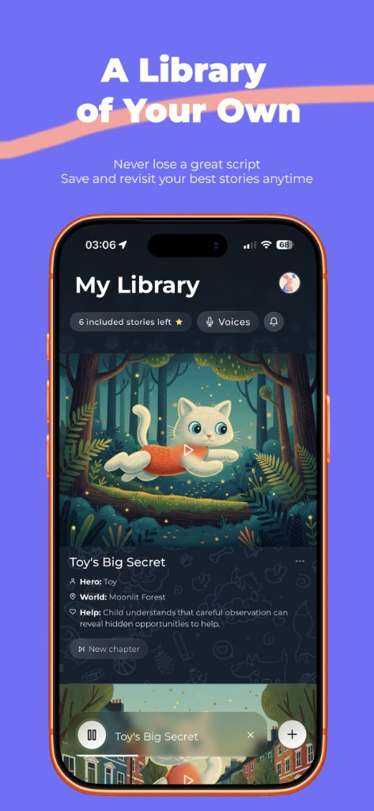

Support
We're happy to help with anything about Nanik — personalized bedtime stories for kids, created by parents.
What Nanik does
Describe a hero — or snap a photo of a favorite toy — and Nanik writes an age-appropriate bedtime story, illustrates it, and reads it aloud. You can use a storyteller voice or clone your own so your child hears a familiar voice.


Free vs Nanik Plus
- Free: 3 personalized stories (lifetime), 1 voice clone
- Nanik Plus: 20 stories per month, up to 3 voice clones, advanced storytelling, and background music while listening
Stories are designed for about a 3-minute read-aloud. Age bands change vocabulary and complexity, not the overall length.
How Nanik works
A quick visual guide matching what you see in the app.
1. Create a story
From My Library, tap Create new story. Choose a hero (description or photo), pick or type a world, optionally add what the story should support, choose language, then review the summary and tap Create story.



2. Record your voice
When you choose narration, pick My voice. Choose the language you will speak, tap Start recording, and read the sample text naturally in a quiet place. Then name the voice (for example Mother or Father), confirm you have the right to use it, and tap Save voice.


3. Listen and continue
Open a story from the library to listen or read. Adjust voice speed (turtle ↔ rabbit), skip 10 seconds, switch to Read, or start a New chapter with the same hero.



Frequently asked questions
How do I create a story?
Sign in with Apple, then tap Create new story in your library. Choose a hero (type a description or use a photo of a toy), pick the world and story details, choose an age group, review the summary, and create. Generation needs an internet connection and usually takes about 1–2 minutes.
How do I add my own voice?
When you choose narration, pick My voice, select Language I will speak, record a short sample (about 9–10 seconds), then save with a name and the consent checkbox. Free accounts can keep 1 voice clone; Nanik Plus allows up to 3. Only record a voice you have the right to use.
How do I change listening speed?
In the player, tap the speed control (for example 0.9x Speed). Drag the slider between the turtle (slower) and rabbit (faster) icons, then continue listening.
How do I continue a story?
Open a story and choose New chapter (or Continue). Keep the same hero and optionally set a new world, description, support theme, or language, then tap Generate.
Can narration keep going if I leave the app?
Yes. After a story is ready, voiceover can continue in the background. You can leave Nanik and get a notification when narration is ready to listen.
What is included for free vs Nanik Plus?
Free includes 3 personalized stories lifetime and 1 voice clone. Nanik Plus unlocks 20 stories per month, up to 3 voice clones, our most advanced storytelling model, and background music during listening. Live prices appear on the in-app paywall.
How do I manage or cancel my subscription?
Nanik Plus is an auto-renewing Apple subscription. Manage or cancel in Settings > [your name] > Subscriptions, or App Store > profile > Subscriptions, and select Nanik. You can also open Account → Manage plan → Manage in App Store in the app. Cancel at least 24 hours before the period ends to avoid renewal. Deleting your Nanik account does not cancel the Apple subscription — cancel it in App Store settings separately.
How do I restore a purchase?
Sign in with the same Apple ID you used to subscribe, then open the paywall or Account → Manage plan and tap Restore purchases.
How do I delete my account?
Open your profile from the library, go to Account, and choose Delete account. This permanently removes your Nanik account and associated app data. You can also email us at gor.kroyan@gmail.com. Remember to cancel any active subscription in App Store settings if you no longer want to be charged.
Why does Nanik ask for microphone, camera, photos, or notifications?
- Microphone — record your voice for personalized narration (see Record your sample)
- Camera / Photos — photograph or pick a toy or object as the story hero
- Notifications — story-ready, voiceover-ready, and bedtime reminders
You can change these anytime in iPhone Settings → Nanik.
Is my child's information safe?
Nanik is designed for parents and guardians to operate — not as a Kids Category app that children use alone. See our Privacy Policy for what we collect and how it's used. Also see our Terms of Service.
Do I need the internet?
Yes for creating stories, illustrations, narration, and subscriptions. A bundled sample story in the library can be opened offline.